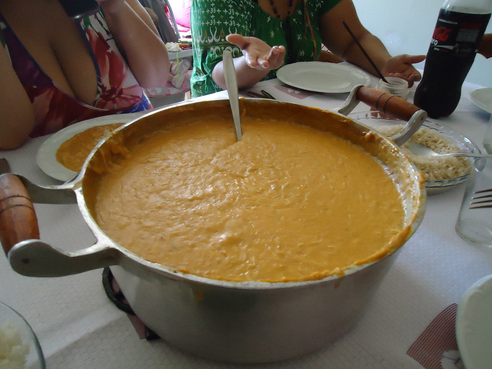

Vatapá

Description
O vatapá é um prato afro-brasileiro cremoso, originário da culinária baiana, feito com pão amanhecido ou farinha de arroz, leite de coco, camarões (frescos ou secos), amendoim e castanha-de-caju, tudo engrossado e temperado com azeite-de-dendê, pimenta, cebola e outros temperos.
Ingredients
- 1/2 kg de camarão descascado e lavado, sem cabeça e rabo
- 2 tomates
- 1 azeite de dendê
- 10 pães
- Sal a gosto
- 2 cebolas médias
- 1 leite de coco
- Cheiro verde picado
- 2 pimentas cheirosas
- Pimenta (malagueta ou murupi) a gosto
Steps
- Refogue o camarão com 3 colheres de dendê junto com a cebola, o tomate, cheiro verde e pimenta cheirosa, reserve.
- Bata no liquidificador os pães com água, para 2 pães, 1 copo de água.
- Despeje o pão batido em uma panela e leve ao fogo.
- Deixe ferver, mexendo sempre, ele começará a engrossar.
- Quando começar a ferver acrescente o restante do dendê.
- Acrescente o camarão refogado.
- Adicione o sal e pimenta, mexendo sempre para não grudar no fundo da panela.
- Quando estiver quase pronto misture o leite de coco e retire do fogo.
Home